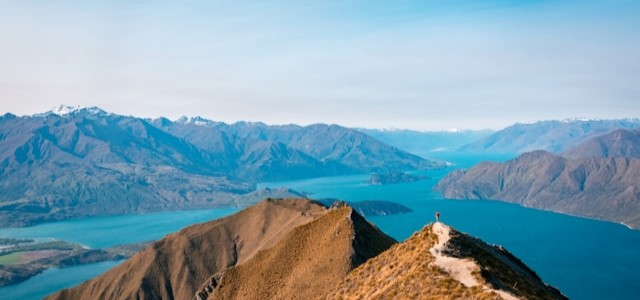
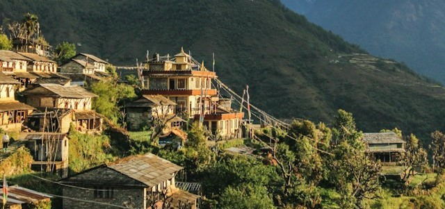

1 / 3
Island är en plats av kontraster och äventyr, där du kan utforska några av världens mest spektakulära naturliga underverk. Från att simma mellan kontinentalplattorna vid Silfra-ravinen till att vandra på svarta sandstränderna vid Reynisfjara, erbjuder Island äventyr som du inte hittar någon annanstans. Här kan du också uppleva den unika isländska kulturen genom att besöka traditionella fiskebyar, bada i varma källor och lära dig om landets rika historia på museer och historiska platser. Oavsett om du reser på sommaren eller vintern, kommer Island att överraska dig med sina dramatiska landskap, vänliga människor och möjligheter till äventyr runt varje hörn.
2 / 3

Nya Zeeland, känt som äventyrsparadiset, lockar resenärer Nya Zeeland är inte bara ett land för äventyrliga aktiviteter, det är en destination som tar din ande med storm. Med sina dramatiska fjordar, glaciärer, vulkaner och världskända vandringsleder som Tongariro Alpine Crossing, lockar landet resenärer från hela världen. Här kan du testa din mod med spännande aktiviteter som bungeejumping från Nevis Bungy, utforska de magiska Hobbiton-filmseten eller paddla i de kristallklara vattendragen i Abel Tasman National Park. Oavsett om du är ute efter adrenalinkickar eller natursköna vyer, kommer Nya Zeeland att överträffa dina förväntningar och lämna dig med minnen för livet.
3 / 3

Att resa genom Nepals bergslandskap är som att vandra genom en levande vykortsbild, med imponerande vyer av Himalayas snötäckta toppar och mångfärgade buddhistiska klostren. Vid sidan av de spektakulära bergsutsikterna kan du utforska de historiska städerna Kathmandu och Bhaktapur, besöka heliga platser som Pashupatinath och Boudhanath, och interagera med de vänliga lokalbefolkningen som delar med sig av sin kultur och gästfrihet. Oavsett om du är en erfaren bergsbestigare eller en som vill vandra kommer Nepal att locka dig med sin charm och otroliga skönhet.
❮
❯